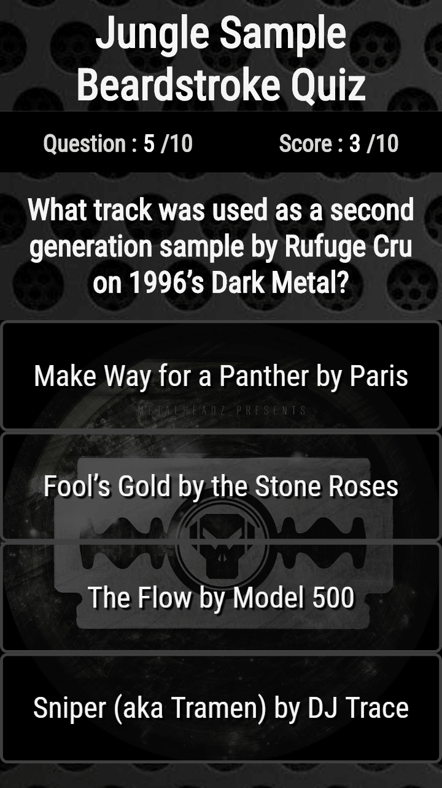
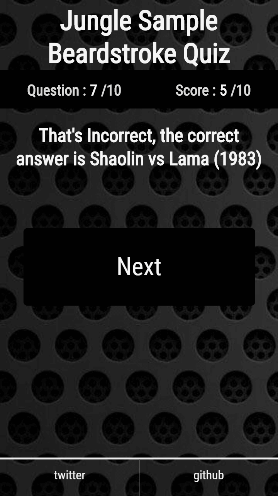

WILLIAM
DIFFEY
Bio:
I am a Web Developer and recent graduate of the Web Developer course at Bloc living between London and Korea. My passions include education, music, future noir and 3d renders. I have lived and worked in five countries in the past ten years. I work with HTML, CSS, Javascript, JQuery, React and Node.js. I love learning about new libraries and frameworks and I have a particular soft spot for machine learning.
Skills & Services
- html/css
- javascript
- react
- node.js
- css grid
- jquery
Projects
Drum & Bass Quiz App
Project description: Tracking down samples used in music is something that has spawned numerous websites,
facebook groups and forums. Many a night’s sleep has been lost trying to track down an elusive breakbeat or vocal sample.
This app allows lovers of drum & bass to test their knowledge and hopefully inspire a few to use some of these samples to make more great music.
Technologies used: HTML, CSS, Javascript & JQuery.
Github
Live Page
 
Contact
I would love to hear from you